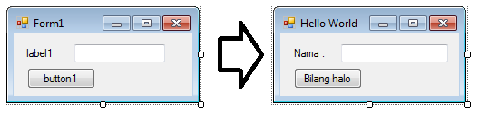

Meskipun aplikasi console mudah dan sederhana untuk digunakan sebagai pembelajaran, akan tetapi saat ini sudah hampir tidak ada lagi aplikasi berbasis console. Oleh karena itu tutorial ini juga akan diselingi dengan beberapa contoh aplikasi Windows Forms. Oleh karena itu pada bagian ini kita akan sedikit berkenalan dengan aplikasi Windows Forms. Pertama-tama, kita buat suatu project Windows Forms baru dengan nama HelloWorldWin. Akan tampak desain tampilan Form1 pada layar. Form adalah istilah yang digunakan untuk window yang akan muncul pada aplikasi kita.
Kita dapat menambahkan kontrol (controls) atau komponen (component) ke dalam form dengan menggunakan ToolBox. Kontrol adalah objek objek visual seperti TextBox, ComboBox, dan DateTimePicker, sedangkan komponen adalah objek objek yang tidak tampak pada layar seperti Timer, BackgroundWorker, dan ErrorProvider. Apabila ToolBox tidak tampak atau tertutup, dapat dibuka melalui menu View > ToolBox pada menubar.
Untuk menambahkan objek ke dalam Form, dobel klik atau drag objek yang diinginkan ke dalam form. Sebagai contoh, mari kita coba tambahkan sebuah Label, TextBox dan Button ke dalam Form, sehingga tampilan Form tampak seperti pada gambar di bawah.

Setelah menambahkan control ke dalam Form, desain form akan tampak seperti pada bagian kiri gambar di atas. Untuk mengubah desain agar tampak seperti gambar di sebelah kanan, kita gunakan panel Properties. Panel properties biasa berada di sebelah kanan window Visual Studio. Ubah property pada masing-masing control seperti yang tertera pada tabel di bawah.
| Objek | Properties | Nilai |
|---|---|---|
| Form1 | Text | Hello World |
| Label1 | Text | Nama : |
| TextBox1 | Name | txtNama |
| Button1 | Name | btnHalo |
| Text | Bilang halo |
Apabila pada aplikasi Console hanya terdapat satu alur program, pada aplikasi Windows Forms terdapat kode-kode program yang hanya akan berjalan apabila terjadi Event (kejadian) tertentu. Dobel klik pada tombol btnHalo pada desain form untuk membuat fungsi btnHalo_Click pada program. btnHalo_Click adalah suatu fungsi yang akan dijalankan setiap kali btnHalo diklik. Perlu diketahui bahwa btnHalo_Click bukanlah suatu event, melainkan hanya suatu fungsi yang dikaitkan dengan event Click pada btnHalo. Apabila Anda baru mulai mempelajari C#, Anda belum perlu memahami sampai sejauh ini, akan tetapi apabila Anda sangat ingin tahu, Anda dapat melihat pada bagian event dan delegates. Di dalam fungsi btn_Halo_Click, ketikkan kode berikut:
Kemudian jalankan program dengan menekan tombol F5. Saat program telah jalan, coba isikan suatu nama pada TextBox dan klik tombol btnHalo. Perintah MessageBox.Show akan menampilkan suatu window kecil pada layar dengan tulisan sesuai dengan nilai parameter pertamanya.